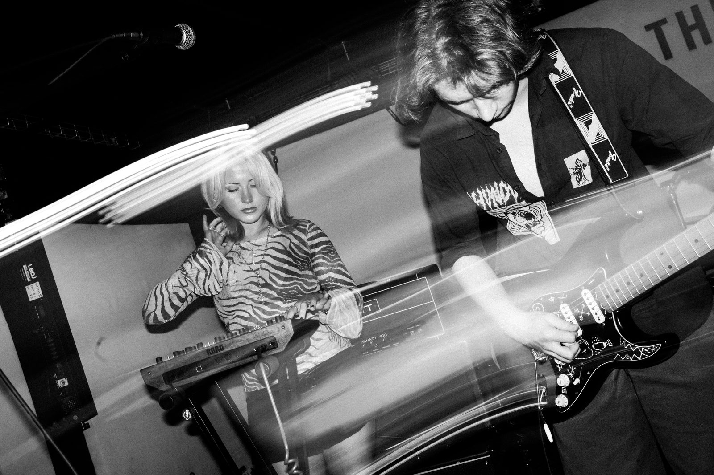

maeve join the bug club on the bill for bbc introducing live’s the sound bridge in bridgend
the south wales six-piece play black cat in bridgend on friday 6 november, as bbc introducing, horizons / gorwelion and beacons cymru bring a day of new music talks and live sets to the town.
read